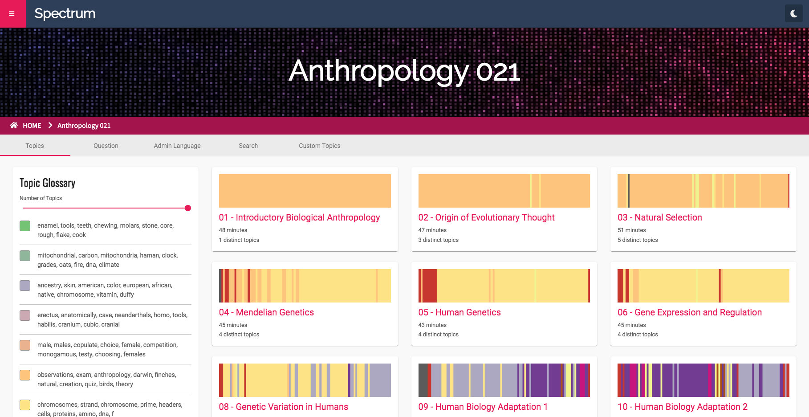
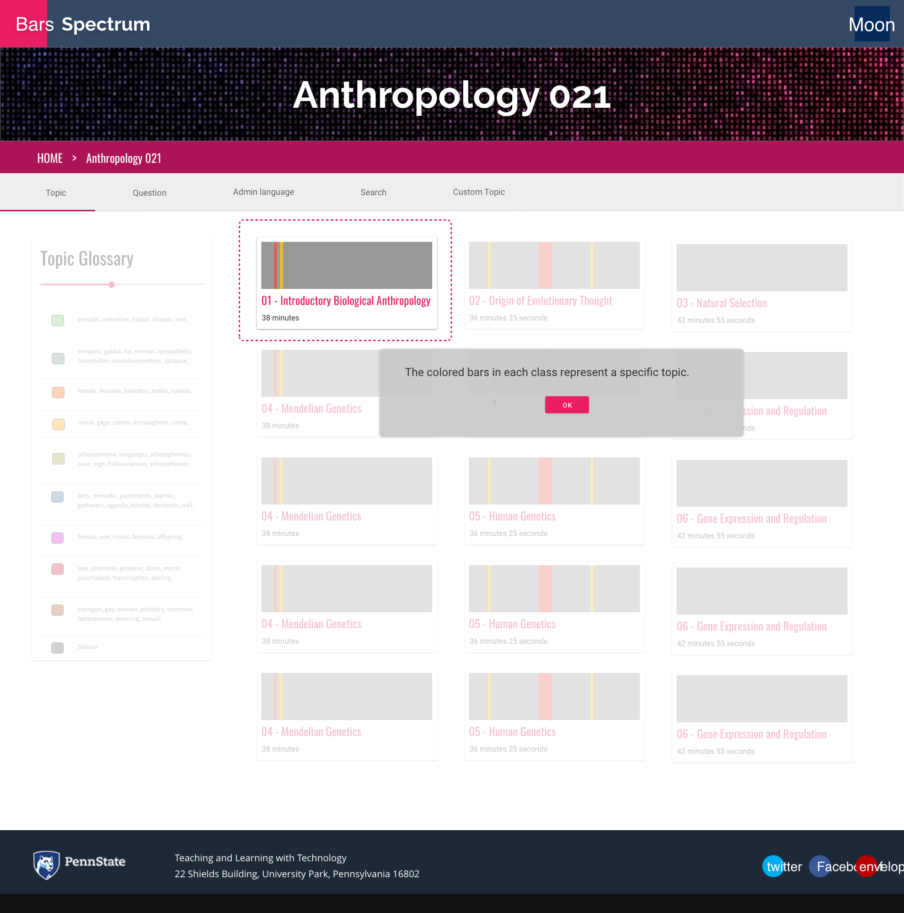
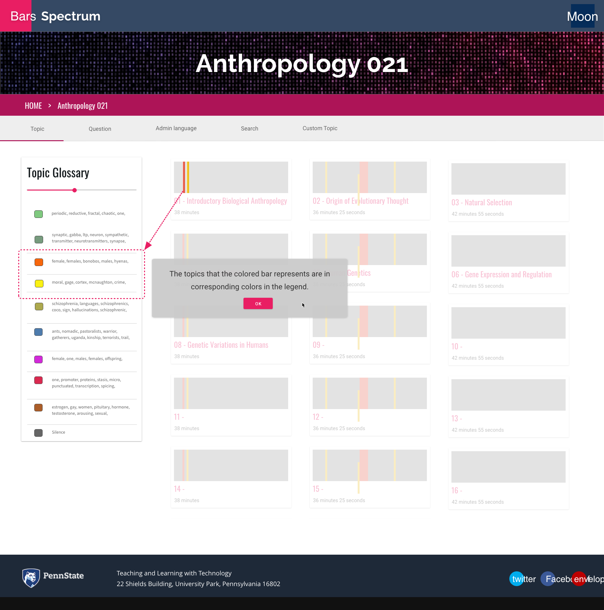

Project 1 - Spectrum

Spectrum is an application that explores the use of cutting edge Natural Language Understanding models on transcripts of lectures. It aims to help instructors, course designers, and students in reflective teaching and learning processes.
Challenge
Instructors have very few channels for actionable feedback, and students have limited access to the lecture details after class.Goal
To serve users with a diverse reflective tool by offering the distribution of concepts and topics discussed over the course from a macro-level view.Work
This project started on 2019 June, and I joined on 2019 September.The project team includes 6 members: 1 project manager, 3 UX researchers/designers, and 3 developers, among which one designer is also a developer.
My responsibility as a UX researcher focuses on 1) usability analysis and 2) new function exploration mainly from the student users perspective. The following 2 examples show the two focuses of my work: finding first-time user usability problems, and optimizing the search function.
First-time User Experiences

Figure 1. The first screen when a user clicks into a course
- Problem: users would not know what the blocks and colored bars can do and what they can do on this page.
Possible solutions:- A welcome screen with an introduction to how this website is generally used.
- A step-by-step tutorial: pop-up messages providing information about each element's function. (see mock-ups below)

- Problem: Legends. The algorithm randomly generates colors to represent topics. It is not convenient enough for users to find which topic
each color represents.
Possible solutions:- Put legends (left-hand box under Topic Glossary) in the order of appearance in the course view, in this case grey, orange, yellow, etc. (see mock-up below)

- To not confuse users with similar colors, legend can be highlighted and scrolled to the field of view as the cursor hover over the colored bar in the lecture. So users know which color that bar is.(see mock-up below)

- Or to allow users to customize the color of the legends. (see mock-up below)

- To not confuse users with similar colors, legend can be highlighted and scrolled to the field of view as the cursor hover over the colored bar in the lecture. So users know which color that bar is.(see mock-up below)
- Put legends (left-hand box under Topic Glossary) in the order of appearance in the course view, in this case grey, orange, yellow, etc. (see mock-up below)